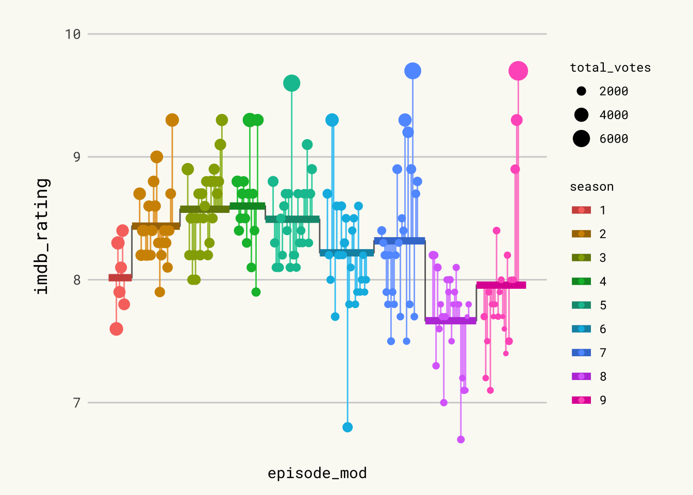

About
This page showcases the work of Cedric Scherer, built for the TidyTuesday initiative. You can find the original code on his github repository here. Thanks to him for accepting sharing his work here! 🙏🙏
Oh and by the way, this is what we’re gonna build in this tutorial:

Package and Theme
As always several packages are needed in order to build the figure. In
this occasion, we also import some fonts from Google via the
font_add_google() function. We finally call
showtext_auto() to indicate that
showtext
is used to draw text in our plots.
# Load packages
library(tidyverse)
library(cowplot)
library(showtext)
showtext_auto()
# Add fonts from Google.
font_add_google("Roboto Mono", "Roboto Mono")
font_add_google("Open Sans", "Open Sans")
font_add_google("Special Elite", "Special Elite")
# Set ggplot theme
theme_set(theme_minimal(base_family = "Roboto Mono"))
theme_update(
plot.background = element_rect(fill = "#fafaf5", color = "#fafaf5"),
panel.background = element_rect(fill = NA, color = NA),
panel.border = element_rect(fill = NA, color = NA),
panel.grid.major.x = element_blank(),
panel.grid.minor = element_blank(),
axis.text.x = element_blank(),
axis.text.y = element_text(size = 10),
axis.ticks = element_blank(),
axis.title.y = element_text(size = 13, margin = margin(r = 10)),
legend.title = element_text(size = 9),
plot.caption = element_text(
family = "Special Elite",
size = 10,
color = "grey70",
face = "bold",
hjust = .5,
margin = margin(5, 0, 20, 0)
),
plot.margin = margin(10, 25, 10, 25)
)
# Turn on showtext
showtext_auto()
For more information on custom fonts with ggplot2, please
visit this
dedicated blogpost.
Load and prepare the dataset
Today we are creating a highly customized lollipop chart to visualize
IMDB ratings for each episode of the television show The Office (US).
The data originally comes from the
schrute R package
and
data.world, but we are using the version released for the
TidyTuesday
initiative on the week of 2020-03-17. You can find the original
announcement and more information about the data
here.
First, we read the data set and take a look at the first few rows to get familiar with the data.
df_office <- readr::read_csv('https://raw.githubusercontent.com/rfordatascience/tidytuesday/master/data/2020/2020-03-17/office_ratings.csv')
head(df_office)
From all the columns included in the data, we use the season
(season), the episode number (episode), the
IMDB rating (imdb_rating), and the number of votes used
for each rating (total_votes).
We start by computing the average rating per season. Observations are
arranged by season and episode to make sure
row_number() represents the episode number irrespective
of the season. season is mutated into a factor type so
ggplot2 recognizes it as a discrete variable instead of
numeric.
df_office_avg <-
df_office %>%
arrange(season, episode) %>%
mutate(episode_id = row_number()) %>%
group_by(season) %>%
mutate(
avg = mean(imdb_rating),
episode_mod = episode_id + (9 * season),
mid = mean(episode_mod)
) %>%
ungroup() %>%
mutate(season = factor(season))
Now we construct the data frame used to plot the horizontal lines with
the mean rating per season, given by start_x and
end_x. This data frame also includes the values we need
to add the line connecting mean ratings for contiguous seasons in
x and y.
df_lines <-
df_office_avg %>%
group_by(season) %>%
summarize(
start_x = min(episode_mod) - 5,
end_x = max(episode_mod) + 5,
y = unique(avg)
) %>%
pivot_longer(
cols = c(start_x, end_x),
names_to = "type",
values_to = "x"
) %>%
mutate(
x_group = if_else(type == "start_x", x + .1, x - .1),
x_group = if_else(type == "start_x" & x == min(x), x_group - .1, x_group),
x_group = if_else(type == "end_x" & x == max(x), x_group + .1, x_group)
)First lollipop version
Let’s build the chart. We are doing it in a step-by-step fashion, adding comments to explain what we are adding each time.
# First, horizontal lines that are used as scale reference.
# They are added first to ensure they stay in the background.
p <- df_office_avg %>%
ggplot(aes(episode_mod, imdb_rating)) +
geom_hline(
data = tibble(y = 7:10),
aes(yintercept = y),
color = "grey82",
size = .5
)
# Add vertical segments.
# These represent the deviation of episode's rating from the mean rating of
# the season they appeared.
p <- p +
geom_segment(
aes(
xend = episode_mod,
yend = avg,
color = season,
color = after_scale(colorspace::lighten(color, .2))
)
)
# Add lines and dots.
# These represent the mean rating per season.
# The dots mark each episode's rating, with its size given by the number of votes.
p <- p +
geom_line(
data = df_lines,
aes(x, y),
color = "grey40"
) +
geom_line(
data = df_lines,
aes(
x_group,
y,
color = season,
color = after_scale(colorspace::darken(color, .2))
),
size = 2.5
) +
geom_point(
aes(size = total_votes, color = season)
)
p Pretty good start. Let’s make it even better.
Add labels & tweak scale
It is worth remarking how the apparently disconnected grey vertical lines are added. Actually, it is only one gray line whose value represents the mean rating. In the end, it looks like several disconnected vertical lines because of the jumps between mean ratings of different seasons and the thicker lines covering it in the sections where it is horizontal.
# Add labels on top.
# They indicate the season and free us from using a legend.
p <- p +
geom_label(
aes(
mid,
10.12, # vertical position of labels
label = glue::glue(" Season {season} "),
color = season,
color = after_scale(colorspace::darken(color, .2))
),
fill = NA,
family = "Special Elite",
fontface = "bold",
label.padding = unit(.2, "lines"),
label.r = unit(.25, "lines"), # radius of the rounder corners.
label.size = .5
)
# Scale and labels customization.
# Override default colors with a much better looking palette.
p <- p +
scale_x_continuous(expand = c(.015, .015)) +
scale_y_continuous(
expand = c(.03, .03),
limits = c(6.5, 10.2),
breaks = seq(6.5, 10, by = .5),
sec.axis = dup_axis(name = NULL)
) +
scale_color_manual(
values = c("#486090", "#D7BFA6", "#6078A8", "#9CCCCC", "#7890A8",
"#C7B0C1", "#B5C9C9", "#90A8C0", "#A8A890"),
guide = FALSE # don't show guide for the color scale.
) +
scale_size_binned(name = "Votes per Episode", range = c(.3, 3)) +
labs(
x = NULL,
y = "IMDb Rating",
caption = "Visualization by Cédric Scherer • Data by IMDb via data.world • Fanart Logo by ArieS"
) +
guides(
size = guide_bins(
show.limits = TRUE,
direction = "horizontal",
title.position = "top",
title.hjust = .5
)
) +
theme(
legend.position = c(.5, .085),
legend.key.width = unit(2, "lines")
)Logo & Save
We are almost there! The last step is to add The Office logo and save
the plot. Adding the logo to the ggplot2 chart is done thanks to the
magick package, and the draw_image function:
# The logo is located in the folder 'img' in the root of our project.
# x and y coords run from 0 to 1, where (0, 0) is lower left corner of the canvas.
logo <- magick::image_read("img/fromTheWeb/the-office.png")
p <- ggdraw(p) +
draw_image(logo, x = -.35, y = -.34, scale = .12)
Usual ggsave function to save the chart to pdf format:
ggsave("img/fromTheWeb/lollipop-plot-with-R-the-office.pdf",
width = 15, height = 9, device = cairo_pdf)png to pdf conversion
Both in the original work by Cedric and here, we save the plot as a
.pdf file. However, what you are seeing on this webpage is actually a
.png file. Here’s how we convert the .pdf plot into a .png file while
maintaining its aspect and quality thanks to the great
pdftools
package.